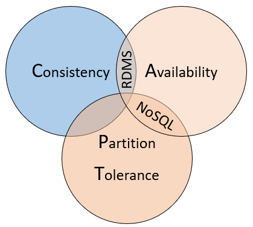

SQL- und NoSQL-Datenbanken
Die von Don Chamberlin und Ray Boyce bei IBM erfundene Structured Query Language (SQL) ist die Standardprogrammiersprache für die Interaktion mit relationalen Datenbankverwaltungssystemen. Sie ermöglicht das Ausführen von Transaktionen wie beispielsweise dem Hinzufügen, Aktualisieren oder Löschen von Datenzeilen sowie dem Zusammenfügen von mehreren Tabellen über Primärschlüssel auf relationalen Datenbanken [1]. Eine relationale Datenbank speichert Daten dabei grundsätzlich immer in tabellarischer Form: Jede Zeile in der Tabelle ist dabei ein Datensatz mit einer eindeutigen ID, die als Schlüssel bezeichnet wird. Die Spalten der Tabelle enthalten die Attribute der Daten [10].
Ein großer Vorteil von relationalen Datenbanken ist es, dass diese die sogenannten ACID-Eigenschaften einhalten können [5, 6, 7, 10]. ACID steht für die englischen Begriffe atomicity, consistency, isolation und durability: Datentransaktionen sollen entweder ganz oder gar nicht ausgeführt werden und sind für andere Benutzer nach Abschluss der Transaktion sichtbar (Atomarität / atomicity). Vor und nach dem Ausführen der Transaktion sind alle Integritätsbedingungen erfüllt, die Daten sind also weiterhin nach zuvor definierten Regeln gültig (Konsistenz / consistency). Wenn mehrere Transaktionen gleichzeitig stattfinden, muss der Endzustand derselbe sein, als wenn die Transaktionen getrennt voneinander ausgeführt worden wären (Isolation / isolation). Und die Daten dürfen sich nur durch Transaktionen verändern, nicht aber durch äußere Einflüsse wie beispielsweise einem Stromausfall (Dauerhaftigkeit / durability). Die ACID-Eigenschaften gelten als Voraussetzung für die Verlässlichkeit von Systemen und sind ein Grund für den Erfolg relationaler Datenbanken.
Dem entgegen steht das Skalierungsproblem relationaler Datenbanken: Dem Scheitern des relationalen Systems, auch bei sehr großen Datenmengen Transaktionen effizient und schnell auszuführen [3]:
Grundsätzlich gibt es drei Ansätze, um dem Skalierungsproblem entgegenzuwirken [8]: Durch Effizienzsteigerungen der Datenbank, sowie durch senkrechte und horizontale Skalierbarkeit. Beispielhafte Ansätze der Effizienzsteigerung der Datenbank sind das Speichern häufig abgefragter Daten im Zwischenspeicher (Caching) oder das Auslagern selten genutzter Daten aus der aktiven Datenbank (Archivierung). Senkrechte Skalierbarkeit bezieht sich auf die Steigerung der Leistungsfähigkeit eines einzelnen Servers, beispielsweise durch CPU-, RAM- oder Speichererweiterungen. Dem entgegen steht die horizontale Skalierbarkeit: Hierbei wird die Leistung eines Systems durch das Hinzufügen von mehreren Knoten (Servern) zu einem Cluster erweitert. Jeder Knoten im Cluster kann Anfragen verarbeiten und die Last wird auf alle Knoten im Cluster verteilt. Wenn die Anforderungen an das System steigen, können zusätzliche Knoten zum Cluster hinzugefügt werden, um die Leistung zu verbessern und die Last weiter zu verteilen.
Relationale Datenbanken sind dabei nicht auf die horizontale Skalierbarkeit als einzig endlose Skalierungsmöglichkeit ausgelegt [8]: Beim Kopieren auf Knoten muss hier die gesamte Datenstruktur übernommen werden. Dies ist notwendig, um die Konsistenz der Daten über alle Knoten hinweg sicherzustellen und sicherzustellen, dass Anfragen an den neuen Knoten dieselben Ergebnisse liefern wie Anfragen an die anderen Knoten im Cluster. Transaktionen wie das Hinzufügen einer neuen Tabellenspalte zu der relationalen Datenbank werden mit steigender Anzahl der Knoten also aufwendiger, da alle Knoten die daraus resultierende neue Struktur übernehmen müssen.
Große Unternehmen wie Facebook, Amazon und Twitter stoßen mit ihren Datenmengen an solche Skalierungsgrenzen relationaler Datenbanken und weichen deshalb auf die Alternative der NoSQL-Datenbanken, also nichtrelationalen Datenbanken aus (not only SQL) [2].
Es wird zwischen den folgenden 4 NoSQL-Datenbanktypen unterschieden [4, 8, 9]:

- Dokumentorientiert (Document Store): Dokumentenorientierte Datenbanken kombinieren jeden Schlüssel mit einer komplexen Datenstruktur, dem sogenannten Dokument. Jedes Dokument kann viele verschiedene Schlüssel-Wert-Paare und Schlüssel-Array-Paare und sogar eingebettete Dokumente enthalten. Dokumente zur Speicherung und Codierung von Daten werden in Standardformaten wie XML, YAML, JSON (JavaScript Object Notation) und BSON in der Datenbank gespeichert. Ein Vorteil ist, dass Dokumente innerhalb einer einzigen Datenbank unterschiedliche Datentypen haben können.
- Schlüssel/Wert-Paar (Key-Value Store): Jedes einzelne Element wird in der Datenbank als Attributname (bzw. Schlüssel) zusammen mit seinem Wert gespeichert.
- Spaltenorientiert (Wide-Column Store): Diese Art von Datenbank speichert Daten in Spalten statt in Zeilen. Das Vertauschen von Zeilen und Spalten hat performancetechnische Vorteile insbesondere bei Aggregationen über große Datenmengen: Da alle Werte einer Spalte zusammen gespeichert werden, müssen nur die Daten dieser Spalte gelesen werden, um Aggregationen durchzuführen, anstatt alle Zeilen lesen zu müssen.
- Graphorientiert (Graph Store): Graphorientierte Datenbanken speichern Informationen über Datennetzwerke. Diese zeigen auf, wie verschiedene Datensätze zueinander in Verbindung stehen. Neo4j, RedisGraph und OrientDB sind Beispiele für Graphdatenbanken.
NoSQL-Datenbanken sind horizontal skalierbar, also durch die Hinzunahme von Servern endlos erweiterbar. Dafür verletzen NoSQL-Datenbanken fast immer mindestens eine der ACID-Eigenschaften. Dies soll anhand des folgenden Beispiels verdeutlicht werden:
Im Gegensatz zu einer relationalen Datenbank kann eine NoSQL-Datenbank problemlos auf deutsche und amerikanische Server aufgeteilt werden, sodass der deutsche Server nur deutsche Konten und der amerikanische Server nur amerikanische Konten beinhaltet [5]. Eine Transaktion könnte eine Überweisung von einem deutschen Konto auf ein amerikanisches Konto darstellen. Während dieser Verarbeitung sind die Datenbanken hierbei inkonsistent. Eine Abfrage der Datenbankinhalte während der Transaktion könnte also ergeben, dass die Überweisung auf deutscher Kontenseite schon abgeschlossen ist, bei der amerikanischen Seite aber noch nicht durchgeführt wurde. Eine solche Inkonsistenz (Verletzung des Cs in ACID) ist bei relationalen Datenbanken nicht möglich [5].
Der Unterschied zwischen relationalen und NoSQL-Datenbanken kann auch über das sogenannte CAP-Theorem herausgestellt werden [3, 4]: Laut dem Theorem müssen verteilte Datensysteme einen Kompromiss zwischen Konsistenz, Verfügbarkeit und Partitionstoleranz eingehen. Eine Datenbank kann dabei nur zwei dieser drei Eigenschaften gleichzeitig gewährleisten:
- Konsistenz bedeutet, dass jeder Knoten im Cluster die neuesten Daten zurückgibt, auch wenn dies bedeutet, dass das System die Anfrage blockieren muss, bis alle Replikate aktualisiert sind. Wenn ein konsistentes System nach einem Element abgefragt wird, das gerade aktualisiert wird, wird die Antwort verzögert, bis alle Replikate erfolgreich aktualisiert wurden. Die Antwort enthält jedoch die neuesten Daten.
- Verfügbarkeit heißt, dass jeder Knoten sofort eine Antwort zurückgibt, auch wenn diese Antwort möglicherweise nicht die neuesten Daten enthält. Wenn ein verfügbares System nach einem Element abgefragt wird, das gerade aktualisiert wird, gibt es die bestmögliche Antwort zum aktuellen Zeitpunkt zurück.
- Partitionstoleranz bedeutet, dass das System auch dann weiterhin funktioniert, wenn ein replizierter Datenknoten ausfällt oder die Verbindung zu anderen replizierten Datenknoten verliert.
Relationale Datenbanken legen in der Regel Wert auf Konsistenz und Verfügbarkeit. Sie verwenden Transaktionen, um sicherzustellen, dass die Daten konsistent bleiben, und sie sind so konzipiert, dass sie immer verfügbar sind, um Anfragen zu beantworten. Allerdings können sie anfällig für Partitionierungsprobleme sein, wenn Teile des Systems ausfallen oder die Verbindung verlieren [4].
NoSQL-Datenbanken hingegen legen in der Regel Wert auf Verfügbarkeit und Partitionstoleranz. Sie sind so konzipiert, dass sie auch dann weiterhin funktionieren, wenn Teile des Systems ausfallen oder die Verbindung verlieren, und sie sind so konzipiert, dass sie immer verfügbar sind, um Anfragen zu beantworten. Allerdings können sie in Bezug auf die Konsistenz schwächer sein als relationale Datenbanken [4].
Folgende Abbildung veranschaulicht diese Beziehungen:
